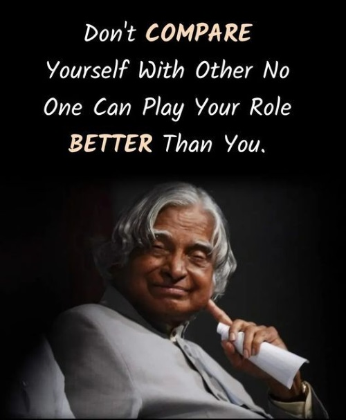
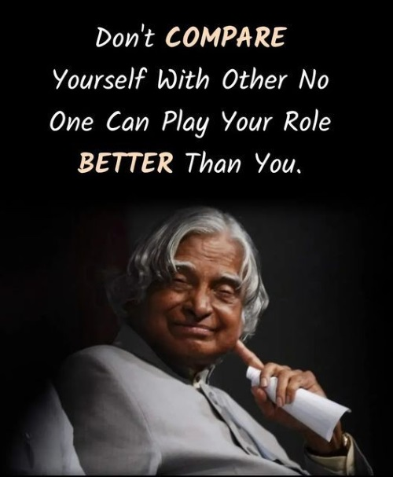

Introduction
Dr. A.P.J. Abdul Kalam (Avul Pakir Jainulabdeen Abdul Kalam, born October 15, 1931, died July 27, 2015) was an Indian aerospace scientist and the 11th President of India, known for his contributions to India's missile and nuclear programs, earning him the title "Missile Man of India". Here's a more detailed introduction: Early Life and Education: Born in Rameswaram, Tamil Nadu, Kalam pursued studies in physics and aerospace engineering, graduating from the Madras Institute of Technology. Career: He spent his career as a scientist and science administrator, primarily at the Defence Research and Development Organisation (DRDO) and the Indian Space Research Organisation (ISRO). .
Admirable Qualities
- Inspiration :
Dream Big, Work Hard: Kalam emphasized the importance of dreaming and working tirelessly to achieve those dreams, stating, "You have to dream before your dreams can come true".
Perseverance and Resilience: He believed in the power of perseverance and resilience, urging people to learn from failures and keep striving for excellence.
Importance of Education: Kalam strongly advocated for education as a tool for empowerment and societal development, believing that it can transform individuals and nations.
Moral Leadership: He exemplified moral leadership, emphasizing integrity, honesty, and a sense of responsibility towards the nation.
Inspiration through Science and Technology: As a scientist and engineer, Kalam inspired a generation of young people to pursue careers in science and technology, contributing to India's progress.
Humility and Modesty: Despite his achievements, Kalam remained humble and grounded, always giving credit to others and emphasizing the importance of teamwork.
Focus on Nation-Building: Kalam's vision for a strong and prosperous India inspired many to contribute to the nation's growth and development. - Quotes:
“We are all born with a divine fire in us. Our efforts should be to give wings to this fire and fill the world with the glow of its goodness.”
“Once your mind stretches to a new level it never goes back to its original dimension”
“To succeed in life and achieve results, you must understand and master three mighty forces— desire, belief, and expectation.”
“If you want to leave your footprints On the sands of time Do not drag your feet.”
“If you want to shine like a sun, first burn like a sun.”
“To succeed in your mission, you must have single-minded devotion to your goal.”
“A big shot is a little shot who keeps on shooting, so keep trying.”
“The only true wisdom is in knowing you know nothing.”
"Those who cannot work with their hearts achieve but a hollow, half-hearted success that breeds bitterness all around."
"You have to dream before your dreams can come true."
"Excellence is a continuous process and not an accident."
"Let us sacrifice our today so that our children can have a better tomorrow."
"We should not give up and we should not allow the problem to defeat us."
Photos
 
